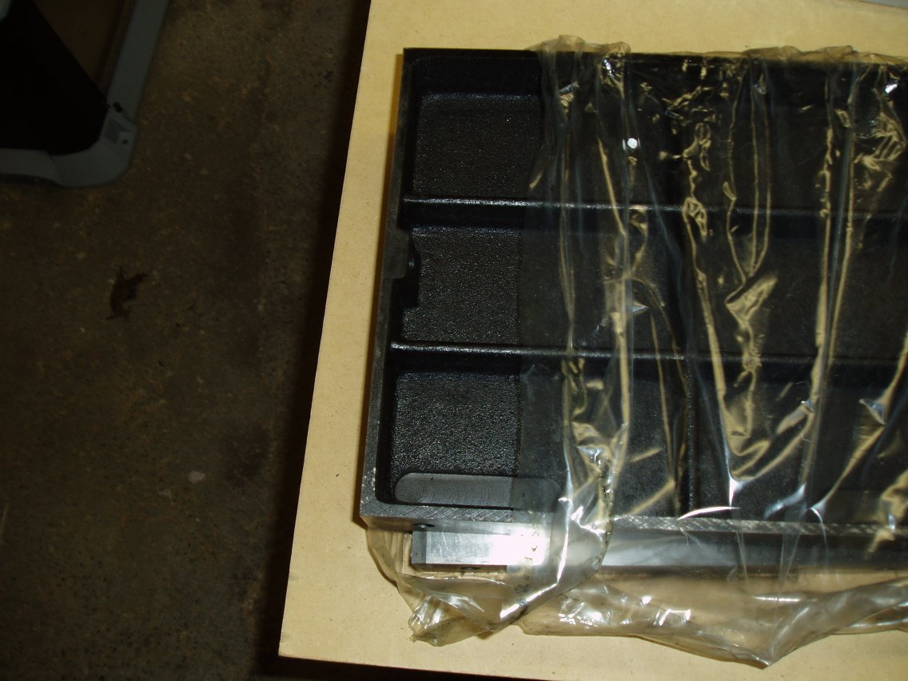
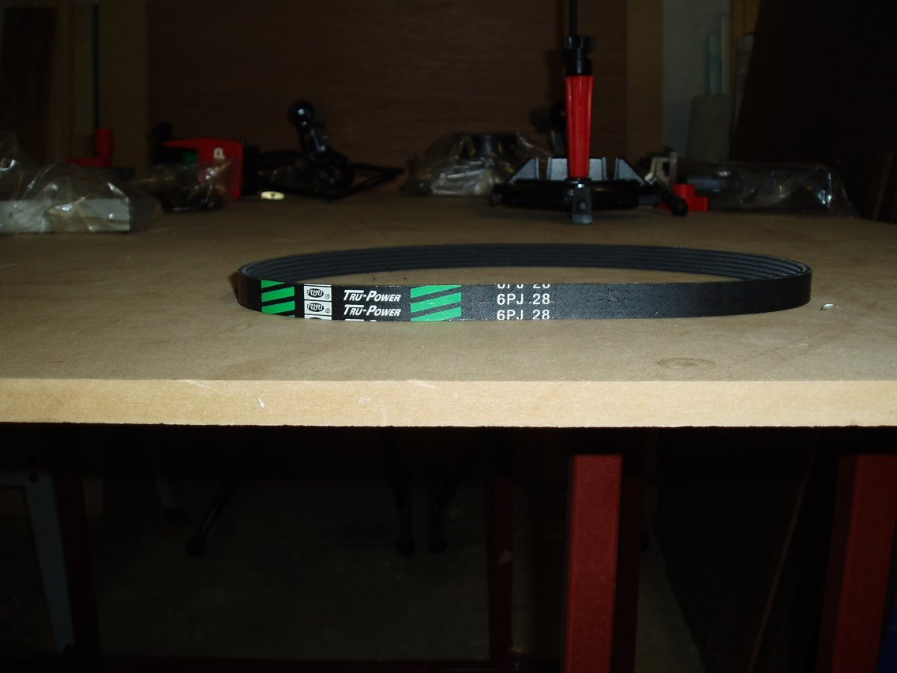
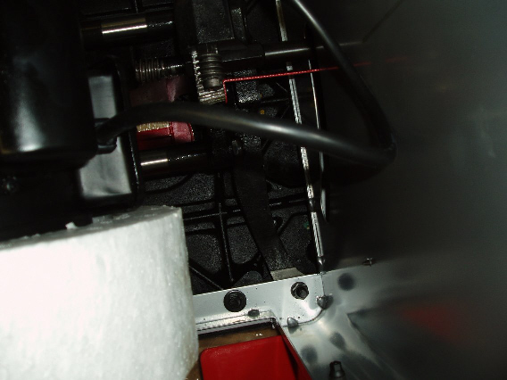
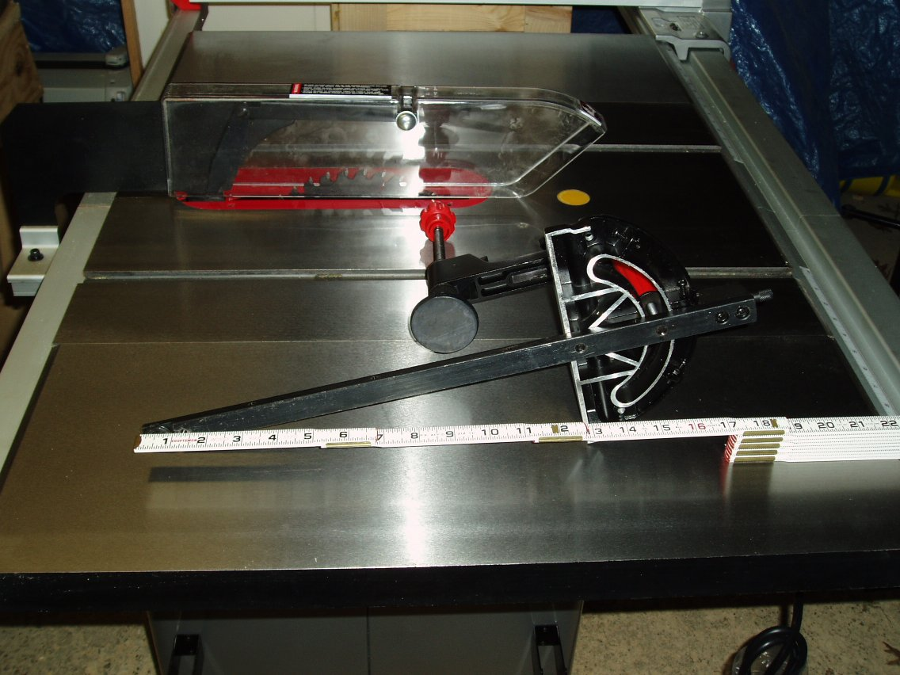

Table Saw
This is my initial post to the Woodnet Forums after setting up my saw:
Well, I did it, finally bought a new Table Saw.
I know it isn't going to sound like it, but I made my choice based on the
things I have learned here on this forum and I choose the Craftsman 22114
saw. I know there is a sizable segment that don't care for the Craftsman
name, but I looked at this saw while keeping the name out of my head, and
saw many of the things in it that many of you have put out as things that
are important. I also saw several little "extras" for the cost of this saw
that I felt this was a very good value/performance buy. I'm at work now and
I'll post some pictures on my website later, but I wanted to give everyone a
chance to roast me over the Craftsman flames throughout the day. :)
First, the full model number,
152.221140, this is made by
Orion International.
The price was $539 plus tax.
The features I looked at that made me make my choice:
1. 27x40 Cast Iron table with the extensions. Very heavy stuff, not thin at
all.
2. 3/4 Cabinet w/enclosed bottom and dust port. The Steel in the
cabinet/legs is 2.25mm thick.
3. Weighs in at 358 pounds. Nice solid feel.
4. Motor in cabinet, so the footprint is less than a more traditional
contractor saw.
5. 1.5 HP Induction Motor prewired for 120 volt operation, but also rated
for 240v with instructions on how to change it over in the manual.
6. 2 Wrench blade change system.
7. Tool less guard/splitter removal.
8. Miter gauge while not cast iron, is very thick Aluminum, and seems larger
than a lot of stock miter gauges. This model also came with an aluminum
auxiliary fence with several t-tracks in the face and on top with a stop
block. It also comes with a hold-down that attaches as well.
9. The fence isn't a Biesemeyer, but it feels pretty solid/strong to me. It
is Aluminum with track on top and bottom, this model also comes with a
sliding Auxiliary fence (Aluminum) as well.
10. It's colors are Scarlet and Grey (GO BUCKEYES!!)
I don't know if this is a plus or a minus, but it uses a poly v-belt, and
there are just grooved shafts on the blade assembly and motor, not actual
pulleys. It is just held in place by the weight of the motor that is on a
pivot rod
I still have to adjust the fence and clean the top up some more, as I waxed
it before I put the wings on, and now it is all smudged. This thing came
packed in a metal pallet which I think will make a nice base for a table of
some type. The fence also has a rear rail, but it doesn't lock on this rail,
it does have a flip down piece on the back that will hook over it that is
used to keep the fence from pulling up when using a feather board. The Front
rails are Aluminum and out of the box are designed for 24" left and 25"
right rip. The rails are attached with square head bolts that slide in a
t-track on the back of the rail and I plan on sliding it over to get about a
37" right rip while keeping about a 12" left capacity. However, before I do
that I'll need to build an extension table so that there will be more than
just one bolt holding the second piece of the rail to the right. For now,
25" will do.
I put it on a Craftsman mobile base, I could have got the HTC 2000 cheaper
from Amazon, but I didn't want to wait on it to ship.
Interesting that the manual doesn't give any directions to adjust the blade
parallel to the miter slots. The trunions seem to sit on top of the cabinet,
and the bolt goes through the cabinet, then the trunion, into the table,
since it looks to be aligned correctly, I'm not going to mess with it right
now.
I haven't had the chance to cut wood on it yet, but after the cast iron
cleanup/waxing/attaching of wings and rails last night, I did finally get a
chance to turn it on, that whoosh of the induction motor is soooooo much
better than the whine of my benchtop's universal motor.
I know many of you offered a lot of different choices than this saw, and I
don't doubt they are all good saws, but I looked at the features of this saw
and how it felt and looks to be built and felt this was a very good choice
for the money. Once I get the final adjustments on the saw done, and my shop
cleaned up some, I invite any Woodnetter that may be on the faaaaaaaar east
side of Cleveland (Geauga County) to stop buy and check the saw out and run
some wood through it (no full projects please!). I just have the stock blade
on it right now, not sure what I want to put on it, I have a Diablo 1040 on
my benchtop, but I want to give a full kerf blade a go, I have one of those
Porter-Cable Razor 50T blades that I bought once and didn't like how it
worked on my benchtop, so other than a little surface rust on it, is like
new, I may give that one a go on this after cleaning it up some.
Since that post I have learned a lot more about this saw and actually been able to make some sawdust with it!!
First, the trunions mount to the cabinet, and the table mounts seperately to the cabinet. It was aligned out of the metal crate
and until such time as it is no longer aligned, then I'll start loosening bolts and see what moves where. :)
Second, the motor is a Dual Capacitor 1.5 HP model. Mine is still wired for 110v, but I have read that to make the conversions to 220v
all you need to do is open the motor, follow the rewiring instructions on the inside cover (reports are that there are even extra wiring nuts in there to
accomplish this) and then cut off the old plug and put on a new 220 plug. The on/off switch and the wire are already good to go.
The mitre gague so far has been very solid. No slop, the aluminum fence is very nice, as well as the hold-down built into the gague. The fence has
also been rock solid for me. What a joy to push the handle down on the fence and not have to mess with a quick square to make sure
it locked down right. To not have to measure front and back of the blade to the fence to make sure, to align that little red line up to a mark and get
the right size cut.
I have used the sliding extension for the fence a few times now. Man, that thing is handy as a stop. When the extension is on, you have to subtract
1" from the fence rail rule. So, all of the little extra gadgets that came with this saw (fence extension, mitre gague hold-down, mitre gague fence) have
really been worth it for me.
Now, onto the saws performance. I have mainly only cut plywood on it so far, however it has cut that smooth, burn free and accurately. I'm also
still using the stock blade it came with, mainly because I haven't seen a full kerf Freud blade in a store yet. Sears seems to only have the think kerf,
as well as Lowe's. I'll have to order one. I did just do a shop/garage project last night that consisted of ripping 10 2x4 down to 3" by taking off 1/4"
from each side, then notching out half-laps to accept another 2x4. I threw on the PC Razor blade for this as I don't like it that much and I figured
it was ok for ripping pine. :)
Anyhow, this was for a big loft/platform for my garage. I'm going to put it on the side and then the kids bikes and toys underneath it. Then I can
store my sheet goods and other things on top of that. This hopefully will give me enough extra room to get some organization. So, first I rip all 10 2x4
twice, one on each side. The saw handled this flawlessly. However, at first I had the saw plugged into a heavy-duty shop power strip, but on about the 3rd
board it kept tripping. I didn't blow a breaker, but the powerstrip itself. Once I went straight to the plug, I was fine, no lights dimming, etc. One thing
I did learn here was that when the saw looses power, it doesn't turn the switch off. No idea if other saws do this, but this could be potentially dangerous.
After I cut 12, 41 1/2" lenghts with my CMS, I then put my stacked dado set on the new saw to cut the half laps. I had grown to hate trying to cut dados on
my TS with the old crappy 1hp Universal motor. Not anymore (other than the rough bottom that is probably due more to my crappy dado set). I felt like
Norm with my stop set with the sliding extension to the fence and just plowing out those half laps easy as can be. Yes, it was just pine, but it makes
me happy anyhow! This was the end of the Table Saw's role in this project, so I'll leave more of the details to another page in the future, but I finished by
running 2, 2x4 across 3 "posts" made up of two of the above pieces with the half-laps around the 2x4 and then glued with Construction Adhesive and screwed
in place. I have two of those structures and then ran four stringers across, secured by 1/4" x 3 1/2" Lag Bolts. I then put a 1/2" sheet of OSB on top and
attached it with #8 wood screws. It isn't a rock solid sturdy as I would like, but I have to have access to get the bikes in an out underneath, so couldn't
run stringers lower on the posts.
All and all, I really like this saw, and for the Craftsman club price of $539, I think it has to be considered along side of the other mid-range Contractor
saws.



